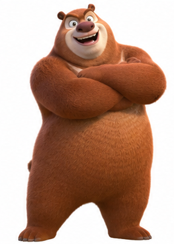
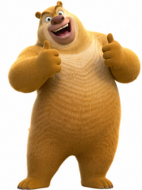

KOTAK MISTERI DIGITAL
Klik kotak misteri dan jawab soalan.
MISI KAMU
3 kotak, 3 perasaan!
★0 / 3SYILING HARTA
Kotak Selesai: 0/3Mari mulakan pengembaraan!


Jom kenali perasaan!
Perhatikan gambar. Fikir, kemudian pilih jawapan kamu.